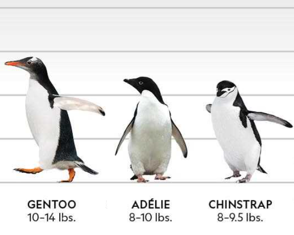
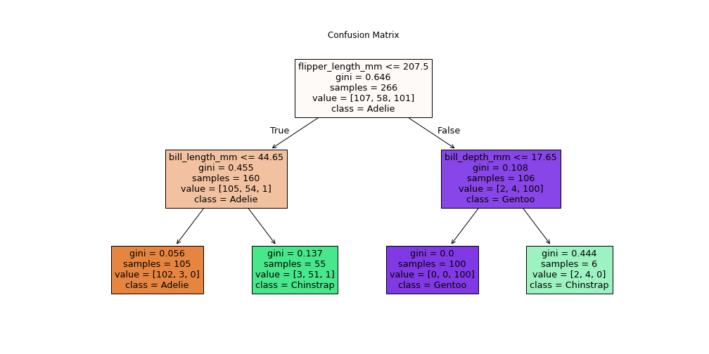
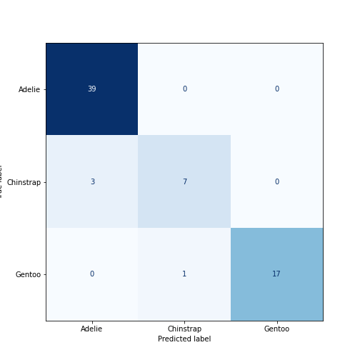

Content from Working Example
Last updated on 2025-07-06 | Edit this page
Overview
Questions
- What can a typical machine learning project look like from start to finish?
- How can I approach solving a problem with machine learning in Python?
Objectives
- Understand the core structure and key stages of a machine learning project
- Run through a complete worked example, from data to evaluation
- Begin exploring how to design your own ML solution for a problem in your domain
Time to Dive Right In
We’re going to jump straight into the deep end by running a worked example that you’ve already set up during the summary and installation steps. Don’t worry if you don’t understand everything right away — that’s completely normal. This first run-through is meant to give you a high-level sense of how all the pieces fit together.
Throughout the week, we’ll break down each stage of this process in detail, so by the end you’ll have a solid understanding of each part. As you go through this example, try and think about how these steps might apply to your own data.
Note: For transparency, all scenarios in these lessons are entirely fictional and not intended to represent real-world data or fieldwork.
Scenario: Pick a Penguin 🐧
A team of marine biologists working in Antarctica is keen to identify penguin species, as the balance between these species is a crucial indicator of climate change and the overall health of marine ecosystems. However, capturing penguins to determine their species is both costly and disruptive to wildlife.
To minimize costs and reduce disturbance, they are exploring whether remote camera stations equipped with automated detection algorithms could monitor and track penguin colonies without close contact or physical handling. As a first step, they want to evaluate how reliably species can be classified based on observable features alone.
They have already assembled a dataset containing individual penguins with known species labels, along with various characteristics such as the island where each was found, bill length and depth, flipper length, body mass, and sex.
Because they collected the data themselves, they are highly confident in its overall quality and content. However, the data for the island variable has been corrupted due to an unknown processing error, so it will need to be removed from the analysis.

Guide to Penguins, NatGeoUK_Expeditions
Based on this dataset, they want to explore the following question:
Your task
We’ll use this scenario to walk through the typical stages of a machine learning project. Now that we’ve defined the problem, here are the next steps on our journey:
- Import the data: Load the penguin dataset into our environment.
- Explore the data: Understand its structure, look for patterns, and identify any missing or unusual values.
- Preprocess the data: Clean and transform the data so it’s ready for modeling.
- Select a model: Choose an algorithm to predict species based on the available features.
- Train and test: Split the data to train the model and evaluate how well it performs on new data.
- Evaluate results: Measure the model’s accuracy and see which features are most influential in distinguishing penguin species.
Import Libraries
If you attended the Python introduction session, some of this code should look familiar. We’ll start by importing the libraries we need and then loading our dataset so we can begin exploring it.
PYTHON
# import the libraries we intend to use
import pandas as pd
import matplotlib.pyplot as plt
from sklearn.model_selection import train_test_split
from sklearn.preprocessing import LabelEncoder
from sklearn.tree import DecisionTreeClassifier, plot_tree
from sklearn.metrics import confusion_matrix, ConfusionMatrixDisplayInspect the Data
Before doing anything else, we want to understand what our data looks like. We’ll start by inspecting the first 10 rows and checking the shape of the table to see how many rows (records of penguins) and how many columns (features) it contains.
OUTPUT
species island bill_length_mm ... flipper_length_mm body_mass_g sex
0 Adelie Torgersen 39.1 ... 181.0 3750.0 Male
1 Adelie Torgersen 39.5 ... 186.0 3800.0 Female
2 Adelie Torgersen 40.3 ... 195.0 3250.0 Female
3 Adelie Torgersen NaN ... NaN NaN NaN
4 Adelie Torgersen 36.7 ... 193.0 3450.0 Female
5 Adelie Torgersen 39.3 ... 190.0 3650.0 Male
6 Adelie Torgersen 38.9 ... 181.0 3625.0 Female
7 Adelie Torgersen 39.2 ... 195.0 4675.0 Male
8 Adelie Torgersen 34.1 ... 193.0 3475.0 NaN
9 Adelie Torgersen 42.0 ... 190.0 4250.0 NaN
[10 rows x 7 columns]OUTPUT
(344, 7)We can see that there are some missing values (NaN) in the dataset. Overall, the data includes 334 rows and 7 columns. Before we check that the contents match what we expect, we’ll remove the island column since we’ve been told this data is corrupted.
PYTHON
#drop island due to the processing error
df_peng = df_peng.drop("island", axis=1)
# check species column is as expected
print('species::', df_peng['species'].unique())OUTPUT
species:: ['Adelie' 'Chinstrap' 'Gentoo']OUTPUT
column headers: Index(['species', 'bill_length_mm', 'bill_depth_mm', 'flipper_length_mm',
'body_mass_g', 'sex'],
dtype='object')We can see that the dataset contains the expected species and features (now without the island column). Next, we’ll focus on the columns with numeric values and visualize their distributions to check for any outliers.
PYTHON
# Which features are we able to visualise distribution?
distribution_features = ['bill_length_mm', 'bill_depth_mm', 'flipper_length_mm', 'body_mass_g']
plt.figure(figsize=(12, 8))
# enumerate gives us a numeric value as well as our feature during our loop
for i, feature in enumerate(distribution_features, 1): #starting from 1 in our numeric loop
# plot position
plt.subplot(2, 2, i)
#create a histogram from our feature with 10 bins
df_peng[feature].hist(bins=10)
# add axis labels
plt.xlabel(feature)
plt.ylabel('Count')
plt.tight_layout()
plt.show()We don’t see any suspicious values, which is a good sign, but we still need to investigate the missing values we identified earlier.
OUTPUT
species 0
bill_length_mm 2
bill_depth_mm 2
flipper_length_mm 2
body_mass_g 2
sex 11
dtype: int64OUTPUT
species 0.000000
bill_length_mm 0.581395
bill_depth_mm 0.581395
flipper_length_mm 0.581395
body_mass_g 0.581395
sex 3.197674
dtype: float64We can see that there are only minimal missing values in the dataset, with the highest being in the sex column, where just over 3% of the data is missing.
Preprocessing
To keep things simple, we’ll remove any rows that contain missing values. This approach may be a little niave, but we’ll explore more sophisticated options later in the week.
PYTHON
#Pre-processing - to 'fix' we remove any rows that have NaN values
#check shape before removal
print('Pre cleaning shape:', df_peng.shape)OUTPUT
Pre cleaning shape: (344, 6)PYTHON
# drop all rows that have NaN values
df_peng_clean = df_peng.dropna()
#check shape after removal
print('Post cleaning shape:', df_peng_clean.shape)OUTPUT
Post cleaning shape: (333, 6)OUTPUT
species bill_length_mm ... body_mass_g sex
0 Adelie 39.1 ... 3750.0 Male
1 Adelie 39.5 ... 3800.0 Female
2 Adelie 40.3 ... 3250.0 Female
4 Adelie 36.7 ... 3450.0 Female
5 Adelie 39.3 ... 3650.0 Male
6 Adelie 38.9 ... 3625.0 Female
7 Adelie 39.2 ... 4675.0 Male
12 Adelie 41.1 ... 3200.0 Female
13 Adelie 38.6 ... 3800.0 Male
14 Adelie 34.6 ... 4400.0 Male
[10 rows x 6 columns]We split the dataset into two separate components:
features (X) and labels
(y). The features (X) include all the measured
characteristics of each penguin that will be used as input to the
machine learning model, such as bill dimensions, flipper length, body
mass, and encoded sex. The labels (y) consist solely of the
species column, which represents the target variable we
want our model to predict.
PYTHON
# split the features and labeled data
# features
X = df_peng_clean.drop("species", axis=1)
# label
y = df_peng_clean["species"]We now need to convert the sex column from its
categorical values into a numeric format to make it suitable for machine
learning models. Most models require all input features to be
represented as numbers, so this transformation ensures that the
sex information can be interpreted during training and
prediction.
Training & Test split
We split our data into two parts: 80% for training the
model and 20% for testing how well it performs on new,
unseen data. The random_state ensures we get the
same split each time we run the code, making results reproducible.
Model Selection & Training
We select a decision tree as our initial baseline model because it provides a high level of interpretability and explainability. In our problem definition, we stated that beyond predicting penguin species, we also want to understand which features are important for making those predictions.
A decision tree naturally reveals this by showing us the sequence of decisions (feature splits) it makes, along with the thresholds it uses. This makes it easy to see, for example, whether flipper length or bill depth is more influential in classifying the species. As a result, using a decision tree helps us both establish a benchmark for predictive accuracy and gain direct insights into the factors driving our classifications.
PYTHON
#Generate a decision tree classifier, max depth of 2 means maximum 2 checks to split the data
clf = DecisionTreeClassifier(random_state=0, max_depth=2)
# train the model on our training data
clf.fit(X_train, y_train)DecisionTreeClassifier(max_depth=2, random_state=0)In a Jupyter environment, please rerun this cell to show the HTML representation or trust the notebook.
On GitHub, the HTML representation is unable to render, please try loading this page with nbviewer.org.
Parameters
| criterion | 'gini' | |
| splitter | 'best' | |
| max_depth | 2 | |
| min_samples_split | 2 | |
| min_samples_leaf | 1 | |
| min_weight_fraction_leaf | 0.0 | |
| max_features | None | |
| random_state | 0 | |
| max_leaf_nodes | None | |
| min_impurity_decrease | 0.0 | |
| class_weight | None | |
| ccp_alpha | 0.0 | |
| monotonic_cst | None |
Results and Evaluation
We use our trained decision tree to predict the species of the penguins in our test set, which represents data the model has never seen before. This helps us evaluate how well the model generalizes to new examples.
To see how accurately it performs across each species, we display the results as a confusion matrix. This highlights where the model makes correct predictions and where it confuses one species for another.
Finally, we visualize the decision tree itself. This reveals the exact sequence of decisions the model makes, which features it finds most important, and the specific thresholds it uses to classify penguins into different species.
PYTHON
# Predict the species of the test set (unseen data) using the model we have created
y_pred = clf.predict(X_test)
# Display results as a confusion matrix
cm = confusion_matrix(y_test, y_pred, labels=clf.classes_)
cm_display = ConfusionMatrixDisplay(confusion_matrix=cm, display_labels=clf.classes_)
cm_display.plot(cmap="Blues", colorbar=False)OUTPUT
<sklearn.metrics._plot.confusion_matrix.ConfusionMatrixDisplay object at 0x000001B63C9D98D0>PYTHON
# Visualise the decision tree
plt.figure(figsize=(14, 7))
plot_tree(clf, feature_names=X.columns, class_names=clf.classes_, filled=True)
plt.title('Confusion Matrix')
plt.show()
Conclusion
In this worked example, we followed a machine learning workflow from start to finish. We built a decision tree classifier to predict penguin species based on physical measurements. This not only gave us a baseline for predictive accuracy, but also provided clear insight into which features the model found most important for distinguishing between species.
As we discussed this approach was overly simple but as we progress through the week, we’ll dive deeper into each of these stages, explore more sophisticated methods.
Key Points
- A typical machine learning project follows a structured pipeline: data exploration, cleaning, preprocessing, model selection, training, and evaluation.
- Even simple models like decision trees can provide valuable insights into which features drive predictions, making them excellent for building intuition and explainability.
- Don’t worry if you didn’t follow every detail. Remember, this was about gaining a high-level overview of the entire process, so that when we dive into each section in detail later, you’ll have the context to understand how it all fits together.
Content from Problem Definition
Last updated on 2025-07-05 | Edit this page
Overview
Questions
- How can I determine what type of problem my data is suited for?
- How do I know what is an appropriate question for a machine learning model to answer?
- How can I clearly define a machine learning problem?
Objectives
- Articulate a clear and measurable AI/ML problem definition
- Identify whether a task is supervised or unsupervised
- Distinguish between classification and regression tasks
- Distinguish between clustering and dimensionality reduction tasks
- Use appropriate machine learning terms when framing a problem
Introduction
In the previous session, we explored (and ideally ran) a working example of a machine learning (ML) project. This provided a sense of what ML can do and the typical stages involved in building, training and evaluating a ML model.
Now, we take a step back and ask: how do we get to that point?
Before we can build a solution, we need to define the problem. That means deciding what we want ML to achieve. Ideally, we want to harness tasks that computers are exceptionally good at, such as spotting patterns in massive datasets, performing millions of calculations quickly, or consistently applying the same rules without fatigue.
However, computers (and ML) are not good at everything. They struggle with tasks requiring common sense, deep contextual understanding, or handling messy, ambiguous problems without clear definitions.
Just because computers can do things human can’t doesn’t mean they can do things human’s find simple; this distinction is not always obvious if you’re just starting out.

“Tasks” by Randall Munroe, xkcd.com/1425, used under CC BY-NC
2.5.
For example:
You could ask your phone to detect duplicate photos in your gallery, even if they’re slightly resized or compressed — a task that could take a person days to do accurately by eye (computers are great at precise, large-scale comparisons, humans not so much).
But to asking your phone to pick out the photo that best captures the mood of a family gathering, becomes almost impossible for a computer as without complex definition and training it has no natural sense of emotional relevance in photos (intuitive for humans, baffling for machines).
So part of defining your ML problem is figuring out whether it plays to these computational strengths, or whether it risks tackling something machines are fundamentally ill-suited to handle.
A good starting point is accurately defining the problem. We can begin by asking…
How Can We Articulate the Problem?
A well-structured ML problem should be:
- Clear: The question should use precise, unambiguous language that explicitly defines the objective.
- Measurable: The problem must involve inputs and outputs that are well-defined, observable, and quantifiable.
- Feasible: The required data should exist (or be collectible), be accessible, and be sufficient in both quality and quantity.
- Appropriate: The question should align with the kinds of problems ML can solve, typically involving prediction, classification, or pattern recognition.
- Ethically Responsible: The question should avoid discriminatory inputs and must not reinforce bias or result in harm.
This is not an exhaustive checklist. Other factors, such as the scope, reproducibility, or specific project priorities, may also be important. If you’re unsure, don’t hesitate to ask for guidance.
We can consider some examples to better understand why these factors are important.
“Can we use AI to look at diseases in crops?”
- The task is vague – “look at” doesn’t describe a specific ML
task.
- “Diseases in crops” is broad – which disease? which crops?
- It’s difficult to interpret and action meaningfully.
- This isn’t a bad ‘starting place’ just a bad ‘finishing place’
-“Can we predict the presence of leaf rust in wheat crops using drone image data?”
Why it’s better:
- Specifies the task: predict the presence of a disease.
- Identifies a specific disease (leaf rust) and crop
(wheat).
- Defines the data source (drone image data).
- These elements narrow the focus, resulting in a much clearer
objective.
“Can we predict how bad a patient’s tumour is?”
- “bad” does not have a precisely defined range
- If the output lacks consistent, measurable categories then it is unsuitable for model training
- “Can we classify tumour types from MRI scans (benign vs malignant)?”
Why it’s better:
- Defines a binary, clearly labelled classification task.
- Uses structured input data (MRI scans).
- Aligns with typical medical data used in supervised learning.
“Can we predict oak tree health from the tree’s number of green vs non-green leaves?”
- Leaf colour counts are difficult to collect consistently at scale.
- What about leaves that are half green? or yellowy-green?
- Assumes the existence of data that may be unreliable, unavailable or
volatile.
- No indication of how the data would be collected or validated.
- “Can we predict oak tree health from labelled phenotypic data collected by forestry personnel?”
Why it’s better:
- Relies on structured, expert-collected phenotypic data
- Improves feasibility through realistic data access
- More likely to meet the quality and quantity needs of ML
“Can AI determine which music is the best?”
- “Best” is subjective and lacks a ground truth label
- The question is not suitable for objective modelling with ML
- “Can our model recommend new music based on a user’s preferences using track features such as tempo and key?”
Why it’s better:
- Uses measurable inputs (e.g., tempo, key) and labelled
preferences
- Frames the task as a recommendation problem, which aligns well with
ML
- Avoids subjectivity by focusing on data-driven feedback
“Can we stream children into sets based on their predicted academic ability using their postcode?”
- While technically feasible, this raises serious ethical
concerns
- Postcode is a proxy for socioeconomic status and may encode
structural bias
- Using it could reinforce inequality or lead to discriminatory decisions
- “Can we identify regions where additional educational resources are most needed?”
Why it’s better:
- Shifts focus from labelling an individual to supporting a
community
- Frames the task in a socially constructive way
- Avoids using sensitive features that could propagate bias
Be mindfull
These are the kinds of considerations you need to make when defining your problem. One important thing to keep in mind…
⚠️ “Just because you can, doesn’t mean you should”
One of the most important, and often overlooked, questions in ML
is:
Who or what is this model helping?
Technical feasibility is only one part of the equation. Responsible AI begins with responsible questions. AI is a tool, how we use it is up to us.
📝 Breakout Task: Reflect on Your Problem Definition
- Discuss with those around you:
- What does your problem definition look like at this point?
- Have you adjusted or refined it since starting this session?
- Is there anything new you might need to consider (e.g., clearer objectives, feasibility, ethical implications etc.)?
- What does your problem definition look like at this point?
Be prepared to share one insight or question with the group.
Considering Data Format
We are moving on to understanding your data and the first thing to consider is how your data is stored and structured? Understanding your data’s format early helps avoid surprises (like trying to feed raw text into a model that expects numerical arrays).
The format of your data has a big impact on:
- How you load it into your analysis environment
- What kind of preprocessing you’ll need
- Which libraries or ML tools are appropriate
- How computationally demanding your pipeline might be
📚 Common data formats
| Data Format | Examples | Typical considerations |
|---|---|---|
| Tabular | CSV, Excel | Check column consistency, delimiters, missing data |
| Free text | Surveys, articles, tweets | Requires cleaning: tokenisation, stopwords removal |
| Images | JPEG, PNG, TIFF | Resize, normalise, convert to arrays |
📝 Breakout Task: Quick questions to understand your data format
- Is your data tabular, text, images, or something else?
- How will you load it?
- Does it require special libraries or custom parsing?
- What does one data point look like?
- Does it need modifying before analysis?
The Data in Context
Now that we have begun to understand what makes a good machine learning question, we must ensure that our data aligns with that question. A model’s performance often suffers not due to algorithm choice, but because of a mismatch between the question being asked and the data being used to answer it.

“Best Selling Product” by Piotr Kononow, dataedo.com/cartoon/best-selling-product,
used under CC
BY-NC 2.5.
💡 “Understand Your Data, or Misunderstand Your Results”
- The better we understand our dataset, the more confidently we can select and apply the appropriate ML approach.
This includes knowing where the data came from, why it was collected, how it was gathered, and what its limitations are.
Not all datasets are created equal. The origins and context of your data strongly influence what kinds of approaches you can take.
“But wait… there is nothing I can change about my data now?”
⚠️ “Overlook the Context, Inherit the Consequences”
In many real-world scenarios we begin with data that has already been collected, often for a different purpose than the one we now intend to explore.
Ideally, we might design a data collection process tailored to our machine learning goals. But in practice, we are often working retrospectively, trying to understand what can be discovered from the data we already have, without the option to amend, expand, or recollect it.
If you are generating synthetic data or designing a future collection process, you’ll have more control. But for the purpose of this session, we assume:
It’s true that the data is fixed.
It has already been collected, and we cannot influence how, why, or from whom it was gathered. However, this context has significant implications for the entire machine learning process, as it shapes what can be modelled, how results should be interpreted, and where caution must be applied.
Key Questions to Ask About Your Data
These questions build directly on our earlier criteria for good problem formulation. They help you assess how the origin and structure of your data may shape what you can realistically model.
- Was it you, your team, or a third party?
- If external: Is the source reputable (e.g., academic, government, commercial)?
- Is the collector contactable?
The more we know about who collected the data, the more we can judge how trustworthy and appropriate it is for our task.
- Was it gathered via surveys, sensors, web scraping, manual input, or experiments?
- Was the process automated or did it rely on subjective human judgment?
- Are there known issues such as selection bias or noise?
The collection method shapes the reliability, completeness, and consistency of your dataset.
- Was it collected for scientific research, business operations, legal compliance, or another reason?
- Was it designed to answer the question you’re asking, or are you repurposing it?
The original purpose influences how well the data matches your intended ML task.
- Is the data recent and representative of current conditions?
- Could location or time-specific events affect its generalisability?
For example, a model trained on pre-COVID mobility data may not reflect current behaviours.
- Is there meta data explaining the columns and values?
- Are the units, formats, and variable names clearly defined?
- Is the treatment of missing values transparent?
Good documentation reduces the risk of misinterpretation and helps support your pre-processing steps.
Examples of how Data Context Shapes ML Pipeline Decisions
Scenario 1: You have been given a large dataset on customers eating habits collected as part of a health food company’s loyalty card programme.
- The data mainly represents customers already interested in buying healthy products.
- It may not generalise to the broader population’s eating habits.
- Restrict your analysis to questions about this customer group.
- Clearly note the demographic limitation in any reports.
- If recorded in the data you could inspect the demographic to better understand the participant makeup.
Scenario 2: You’re given a series of air quality readings from low-cost sensors mounted onto city buses.
- The data is biased towards higher pollution hotspots, missing residential areas or parks.
- Could misrepresent overall city air quality.
- How reliable are the sensors?
- Frame your project around high-traffic pollution monitoring, not general air quality.
- Use this data to identify peak exposure zones for traffic planners, rather than claiming citywide averages.
- Could be combined with bus routes to understand the data better.
- Can you find documentation reporting the error range of the sensors?
Scenario 3: You’re analysing water consumption data from a chain of hotels, you discover the data was all collected between May and September.
- It may reflect heavy tourist usage, not typical yearly demand.
- Are the hotels in hot climates? Are they refilling their pools?
- Use the data to study peak scenarios.
- Avoid generalising to average annual water needs unless you can adjust using known seasonal factors.
Scenario 4: You receive a weather dataset and the columns named
Rate, ‘rate2’, Wind, Temp… with
no clear documentation, you believe you can deduce their meaning from
the context of the dataset.
- You might misinterpret what these columns mean — e.g. thinking
rateis a rate of increase when it is a rate of decrease. - Data could be redundant (duplication) which is difficult to confirm if you don’t understand the columns.
- Conduct exploratory analysis to check plausible ranges (e.g. your data is for a weather station in Aberystwyth and ‘temp’ rarely goes above 20 and has never gone above 35, probably safe to assum it is in Celsius).
- Cross-reference any example records or outputs you can find.
- Document all working assumptions
- Speak to the collectors (if possible)
📝 Breakout Task: Consider your data’s context
- With the people around you, discuss:
- Who collected your data, and why?
- How was it collected — and could that process introduce bias or gaps?
- When and where was it gathered — does that affect how generalisable it is?
- Is the documentation clear, or do you have questions about what columns mean?
- If none of these risks are relevant, why not? and are there any risks that are?
Try to identify at least one risk or limitation in your data’s context that might influence your machine learning pipeline (e.g., needing extra cleaning, restricting your conclusions, or choosing fairness-aware metrics).
Be ready to share your observations.
Framing your Problem
Next it is a good idea to frame our question. This means working out exactly what kind of machine learning problem we’re trying to solve so we can communicate it clearly, both to ourselves and to others who understand ML.
🕒 Terminology Time
Let’s start with two important terms in machine learning:
Features
Features are the individual pieces of information that you use to help make predictions. They are the inputs to your model.
Examples:
- The length and width of flower petals
- A person’s age, height, and cholesterol level
- A pixel value
But wait… what if I don’t have labels in my dataset?
That’s fine, this is a critical question that will start to shape your entire project.
Supervised and Unsupervised Learning.
Before we choose an algorithm, we need to answer:
“Are we dealing with supervised or unsupervised learning?”
 .
.
Supervised Learning
You already have the answers (the labels). The goal is to teach the model to predict the correct label given new data.
Example: - A botanist has recorded the length and
width of flower petals and also classified each flower’s species.
- Your question: Can we predict the species of flower based on petal
length and width?
Supervised learning is used when:
- You have data that includes both inputs (features) and known outputs (labels).
- You want to see how well you can predict a known outcome from the inputs.
Unsupervised Learning
You do not have labels. The goal here is to explore your data and uncover hidden patterns or groupings.
Example: - You measured the length and width of many
flower petals from a region, but don’t know their species.
- Your question: Can we find natural groupings (clusters) in the
data that might correspond to different flower species?
Unsupervised learning is used when:
- You only have input data (features) and want to discover relationships, structures, or clusters that you didn’t know about beforehand.
🕒 Terminology Time
| Label Type | Description | Example Values |
|---|---|---|
| Categorical | Data divided into distinct groups or categories |
['Yes', 'No'] or
['UK', 'France', 'Spain']
|
| Continuous | Numeric data that can take on any value within a range (measurable quantities) |
3.5, 98.6, 12.0,
4.2
|
If we are dealing with supervised learning, the next question is:
“Are our labels describing categories or quantities?”
 .
.
Classification
You want to predict which category something belongs to.
Example: - Given features like flower petal length and width, predict whether the flower is a setosa, versicolor, or virginica.
Classification is used when:
- Your labels are categorical (belonging to distinct groups or classes).
- The task is to assign inputs to discrete categories.
Note:
There are different sub-types of classification (e.g., binary vs multiclass vs multilabel) to describe different kinds of classification.
Regression
You want to predict a numeric value.
Example: - Given petal length, predict the petal width.
Regression is used when:
- Your labels are continuous numerical values.
- The task is to predict quantities that can take on a range of values.
🕒 Terminology Time
| Unsupervised Task | Description | Typical Goal |
|---|---|---|
| Clustering | Grouping data points based on similarity (no predefined labels) | Discover hidden groupings or patterns |
| Dimensional Reduction | Simplifying data by reducing the number of features | Visualisation or Understanding |
If we are dealing with unsupervised learning, the next question is:
“Are we trying to group similar things, or reduce complexity?”
 .
.
Clustering
You want to find groups or clusters in your data.
Example: - You analyse a series of petal lengths and widths to determine if there are distinct groups within the data.
Clustering is used when:
- You have unlabelled data.
- You suspect some structure or grouping exists and want the algorithm to discover it for you.
Dimensionality Reduction
You want to simplify your data by reducing the number of features, while preserving important structures or relationships.
Example: - You have 100’s of features about petals you believe they are not all important and you want to reduce the overall number of features.
Dimensionality reduction is used when:
- Your dataset has many features, and you want to:
- Visualise it more easily
- Reduce noise or redundancy
- Speed up future modelling
You can think of it as compressing data to keep the most important patterns.
Challenges
🦞 Problem Scenario 1
New UK fishing legislation has forced boats to release lobsters under a certain weight. However, weighing lobsters on a boat is costly and cumbersome, so the fishing industry is exploring more efficient ways to gauge lobster weight.
A dataset from a group of marine biologists in Canada includes the length and weight of thousands of lobsters caught along various parts of the coastline. They want to know if this existing data could be used to estimate the weight of a lobster from its length, as length is more easily captured through pre-existing on-board imaging systems.
What type of ML problem is this?
- Supervised or Unsupervised?
- Classification, Regression, Clustering, or Dimensionality
Reduction?
- What are the inputs and outputs?
Also discuss: - What might a clear problem definition look like? - What considerations do we need to give the data?
- ✅ Supervised Learning
- ✅ Regression — because the task is to predict a
continuous numeric output (weight) from an input (length).
-
Inputs (features): lobster length
- Output (label): lobster weight
A clear problem definition could be:
“Can we predict the weight of a lobster based on its length measurements using a regression model trained on historical length-weight data from Canadian lobster populations?”
Data considerations:
- The data comes from Canadian lobsters, so we should check if growth patterns are similar for UK lobsters, or if a local dataset is needed for best accuracy.
- Ensure the data covers the full range of sizes relevant to UK fishing regulations, or risk poor predictions at critical cutoffs.
Challenge
🚜 Problem Scenario 2 A group of agricultural researchers have acquired hand written soil data records from several different farms. These logs record moisture, pH, and nutrient levels every week. The researchers hope to discover natural groupings of soil conditions across the region to better target fertilizer treatments.
What type of ML problem is this?
Supervised or Unsupervised?
Classification, Regression, Clustering, or Dimensional Reduction?
What are the inputs and outputs?
Also discuss:
What might a clear problem definition look like?
What considerations do we need to give the data?
✅ Unsupervised Learning
✅ Clustering — because the goal is to uncover natural groupings (clusters) without pre-labelled outcomes.
Inputs (features): sensor measurements (moisture, pH, nutrient levels)
No explicit outputs (labels) since the task is to find structure.
A clear problem definition could be: “Can we identify distinct clusters of soil conditions based on moisture, pH, and nutrient levels to guide targeted fertilizer application?”
Data considerations: Individual farmers may have different standards, leading to inconsistencies or mismatches between data.
Instruments may differ between farms and this may also lead to inconsistencies between data sets.
Applying it to your problem
Challenge
Take some time to think about your own dataset and research question (or a project you hope to start). Try to use what we’ve covered in this session to explore:
What type of ML problem is this?
Supervised or Unsupervised?
Classification, Regression, Clustering, or Dimensionality Reduction?
What are your inputs (features) and outputs (labels), if applicable?
How would you write a clear problem definition?
Are there any data context considerations or ethical risks?
Use this exercise to create the first slide of your slide deck. You will be using your slide to introduce yourself and your problem to the group.
Key Points
- Defining your problem clearly is a critical step in any ML project. A poorly defined question can lead to poor or even meaningless results.
- Machine learning is best suited for tasks that play to computational strengths (e.g., pattern recognition, scale, consistency).
- A good ML problem is clear, measurable, feasible, appropriate for ML, and ethically sound.
- Developing an understanding of the shared vocabulary is essential for clearly categorising and efficiently discussing your problem type.
- The context of your data is crucial for understanding the limitations of your analysis and the conclusions you can reliably draw.
Final note

“Here to Help” by Randall Munroe, xkcd.com/1536, used under CC BY-NC
2.5.
None of this is easy, so try not to get discouraged.
Defining a good ML problem, and understanding your data’s limitations, is challenging work.
Remember, there is no silver bullet, and we’re here to help you navigate it.